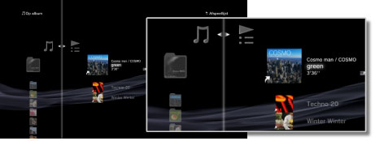
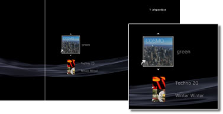

Muziek > Afspeellijsten gebruiken > Afspeellijsten bewerken
Afspeellijsten bewerken
U kunt tracks toevoegen aan of verwijderen uit een afspeellijst, of de tracks herschikken in een afspeellijst.
Tracks aan een afspeellijst toevoegen
1. |
Selecteer |
|---|---|
2. |
Selecteer de afspeellijst die u wilt bewerken en druk dan op de |
3. |
Selecteer [Bewerken].  |
4. |
Selecteer met de richtingstoetsen de track die u aan de afspeellijst wilt toevoegen uit de tracks die op de harde schijf zijn opgeslagen. |
 (Muziek) >
(Muziek) >  (Afspeellijsten).
(Afspeellijsten). -toets.
-toets. -toets om het bewerken te stoppen.
-toets om het bewerken te stoppen.Tracks uit een afspeellijst verwijderen
1. |
Selecteer |
|---|---|
2. |
Selecteer de afspeellijst die u wilt bewerken en druk dan op de |
3. |
Selecteer [Bewerken]. |
4. |
Selecteer de track die u uit de afspeellijst wilt verwijderen en druk vervolgens op de |
 -toets.
-toets.Opmerkingen
- Zelfs indien een track uit een afspeellijst verwijderd wordt, is dat muziekbestand niet van de harde schijf gewist.
- Indien u een track uit een afspeellijst van de harde schijf wist, is die track ook automatisch uit de afspeellijst verwijderd.
Tracks in een afspeellijst herschikken
1. |
Selecteer |
|---|---|
2. |
Selecteer de afspeellijst die u wilt bewerken en druk dan op de |
3. |
Selecteer [Bewerken]. |
4. |
Selecteer de track die u wilt verplaatsen en druk vervolgens op de  |
5. |
Gebruik de |
 -toets.
-toets.
 -toetsen om de track naar de gewenste positie te verplaatsen en druk op de
-toetsen om de track naar de gewenste positie te verplaatsen en druk op de